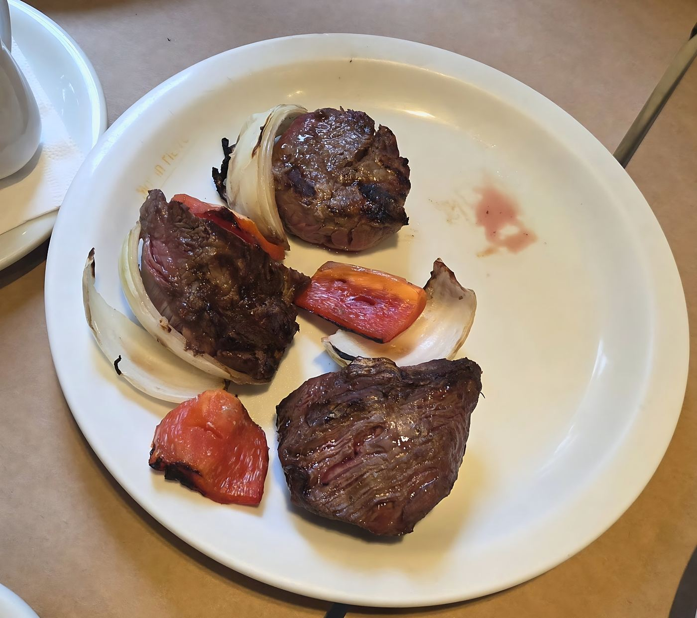
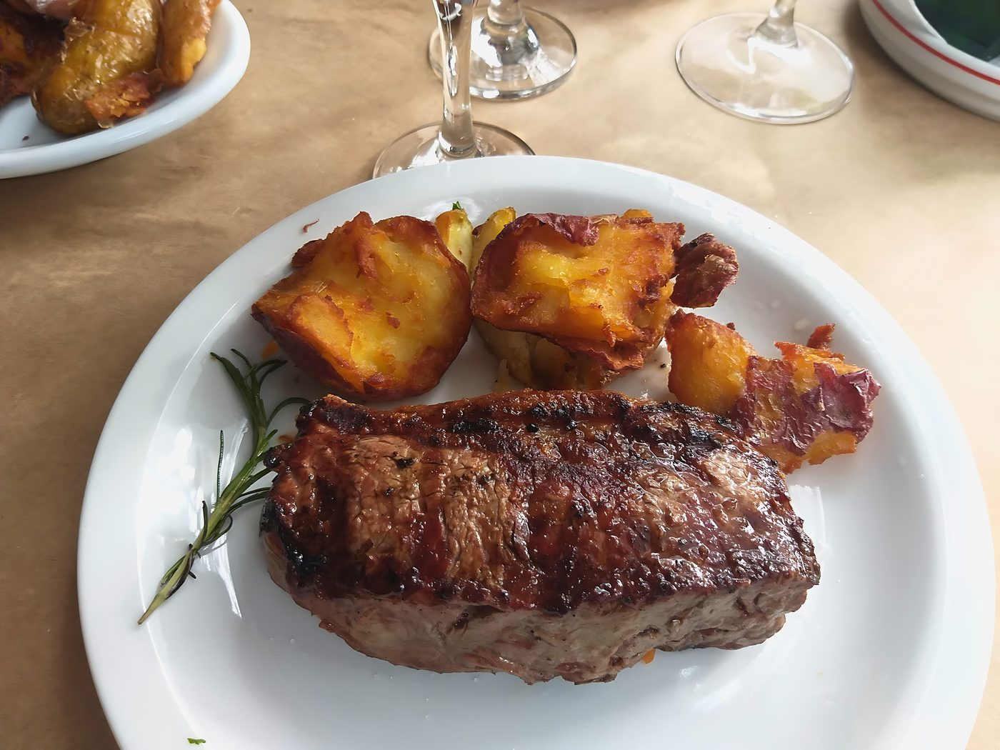
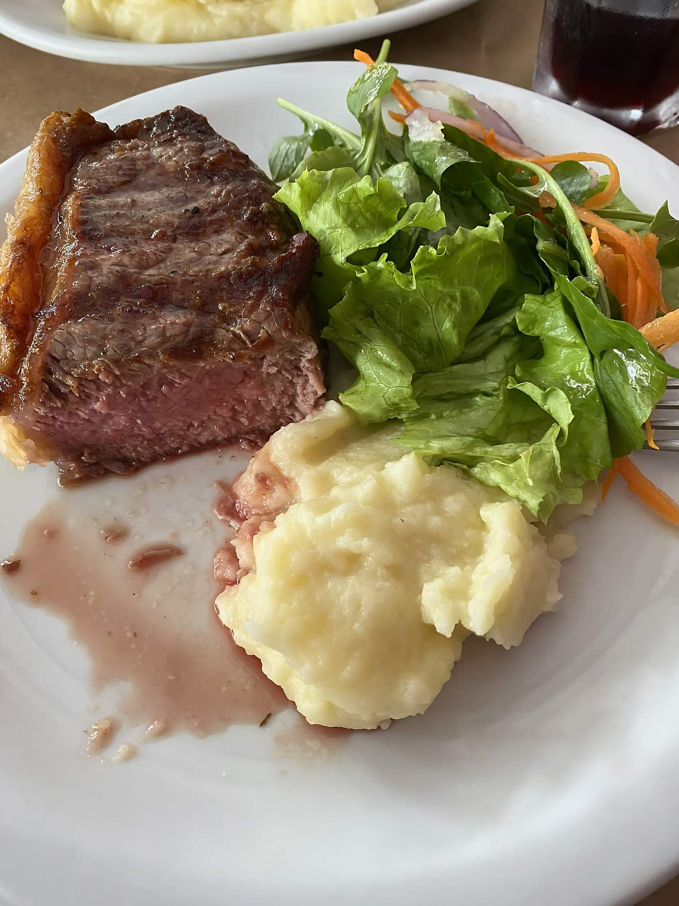
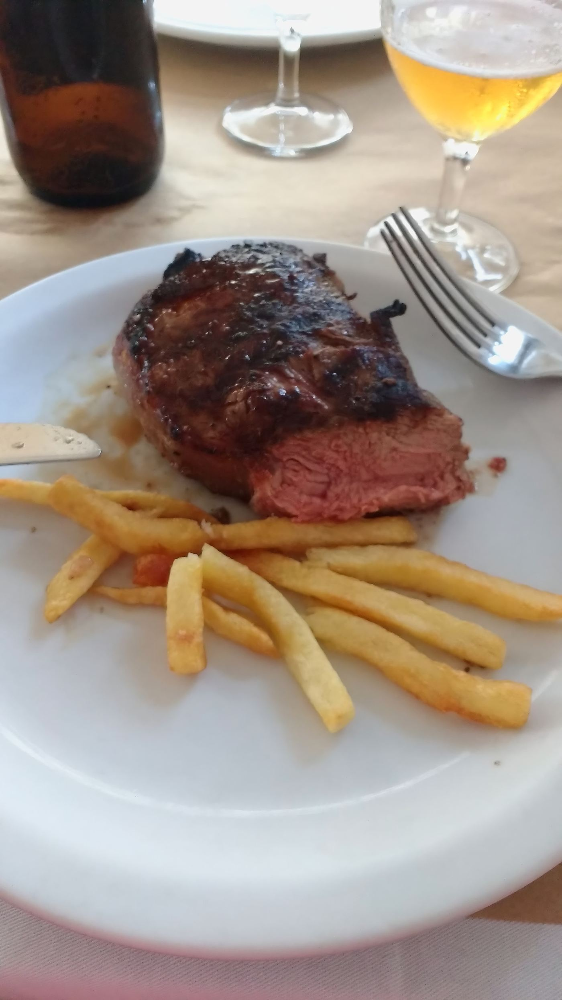
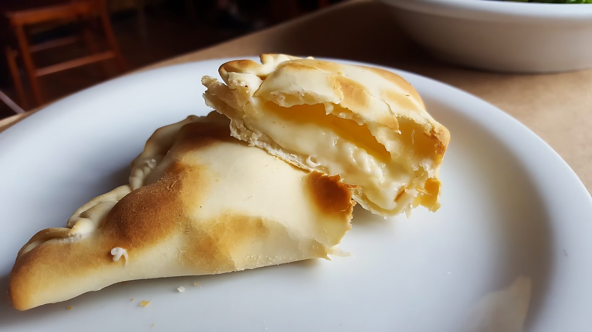
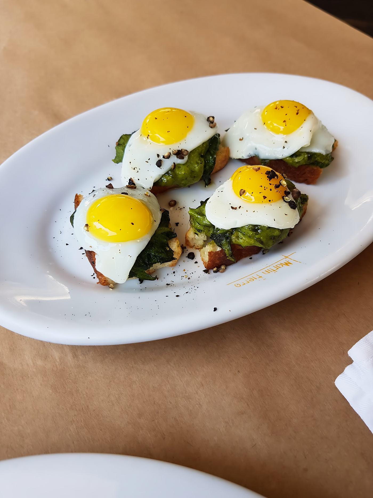

Da parrilla
Filé mignon
Medalhões grelhados com cebola e pimentão assados.

Cortes argentinos na parrilla, empanadas assadas e vinho para acompanhar, na Rua Aspicuelta.

Na Rua Aspicuelta, no coração da Vila Madalena, o Martín Fierro serve cortes de carne argentina, empanadas e cerveja num ambiente simples e informal, do jeito que uma boa parrilla pede.
Na mesa, filé mignon, bife, maminha e assado dividem espaço com a farofa de ovo e a salada de pupunha. Para fechar, alfajor. Tem mesas na cobertura e na área externa, e também dá para pedir para viagem ou delivery.
Nota 4,5 no Google, com mais de 1.400 avaliações.
Uma seleção com pratos reais da casa. Descrições e fotos finais entram no site completo.

Medalhões grelhados com cebola e pimentão assados.
Grelhado, com molho à parte.

Corte grelhado servido com fritas.
Assadas, com a borda fechada à mão.

Massa dourada e recheio cremoso.

Com ovos de codorna e pimenta-do-reino.
Também no cardápio: Maminha · Assado · Farofa de Ovo · Salada de Pupunha · Alfajor · Vinho · Stella Artois